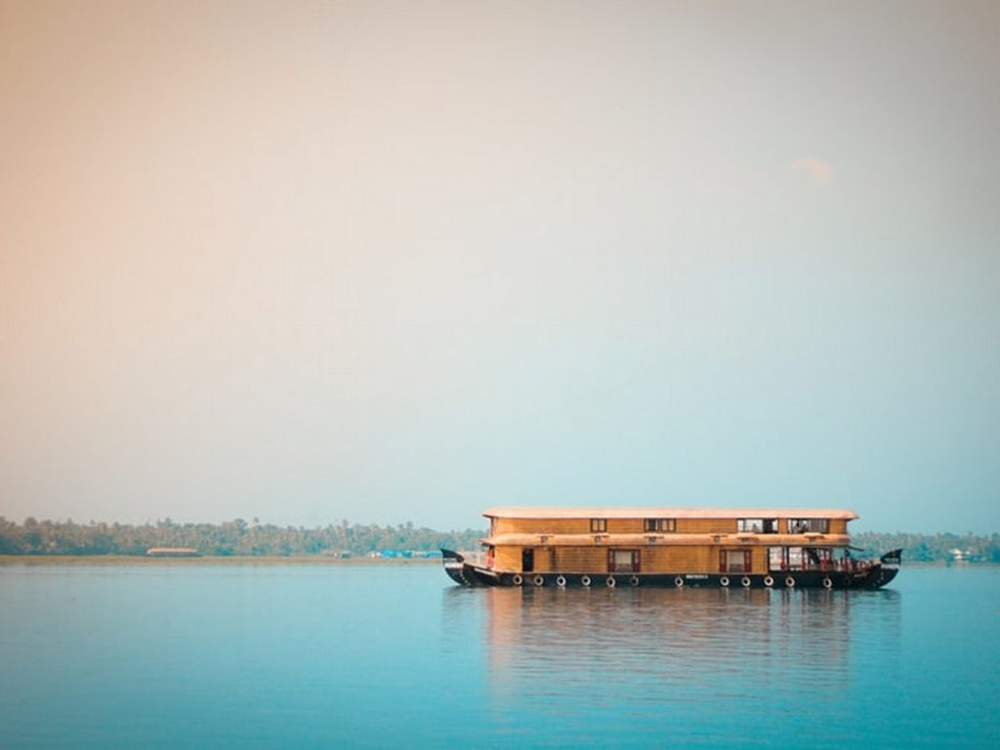

Top Destinations in Kerala

ALLEPPEY
Alleppey tops this list of best places to visit in Kerala with pictures. Its backwater trips, houseboat stays, and serene beauty attract a fair number of people to its territory. In fact, it is the most popular place to experience some offbeat Kerala backwaters.
MUNNAR
Munnar is one of the best tourist places in Kerala for 2 days trip itinerary. Once the summer capital for the British, Munnar sightseeing attracts tourists from all across the world. With about 80,000 miles of tea plantation, an equal measure of aromatic vegetation, misty valleys, and low-flying clouds, Munnar is a hill station that has become one of the best tourist places in Kerala for a honeymoon.

THEKKADY
Thekkady is simply heaven hidden in thick forests and wild vegetation and this is exactly what it makes one of the best forest tourist places in Kerala. You get to see the nearly extinct species of animals including tigers, sambars, gaurs, and lion-tailed macaques. Also, there are elephants, lions, deers, bison, boars, and the Great Indian tigers. Probably, the most favored among Kerala’s tourist places, Thekkady boasts of abundant beauty and exotic wildlife.

KUMARAKOM
Situated near Vembanad Lake, Kumarakom is a quiet little hamlet with alluring sceneries, ever pleasant weather and exotic flora and fauna; making it one of the loveliest tourist places in Kerala. You get a mix of everything here – backwaters, authentic Kerala cuisine, uber fresh air, the warmth of Keralites, and deliciously fresh coconuts. There is a lot to do; choose from boating, cruising, Kumarakom houseboat stay, and fishing.Kumarakom holds a special spot in the list of best of Kerala’s sightseeing places.

VAGAMON
There is an enchanting hill station called Vagamon which is hidden from all the hoopla and surprisingly is one of the best places to visit in Kerala. Adorned with magical meadows, mystical gardens, beautiful dales, aromatic tea plantations, and misty valleys, Vagamon hills has surely earned its place among the best tourist places in Kerala. The fresh air and perfectly manicured gardens of Vagamon are a breath of fresh air.
VARKALA
Varkala is one of the best places in Kerala seaside. The enticing coastline with cliffs on one side and lush greenery on the other attracts thousands of tourists and water-adventure enthusiasts to the beach. It is popular for activities like boat riding, surfing, parasailing, jetting, horse-riding are the life of the beach. The unmatched beauty of the beach is at its prime during sunsets.The hues of colourful rays make for a surreal atmosphere. Add a dash of luxury by choosing from the most exotic beach resorts in Kerala, around Varkala and you are set.